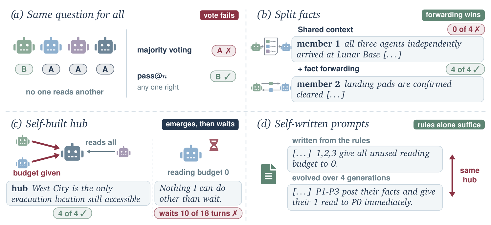

When Is a Group of Agents Smarter Than Its Members?
We think a group of agents deserves credit only for what its interaction adds, so we grade every group against independent agents that spend the same tokens. Grading this way shows when interaction makes a group smarter, how identical agents organize themselves, and how a group trains a smarter next generation from its own work.
The whole story in under two minutes. The video first introduces grading at equal cost and then follows the study from interaction through self-organization to training across generations.
TL;DR
A team of agents usually spends many times the tokens of one agent. Spending the same tokens on independent answers and voting over them already explains most of the gains that papers report. We therefore credit a group only against independent agents that spend the same tokens, using a three-level equal-budget ladder. On this ladder, interaction pays off when it moves information between agents: forwarding split facts lifts a group 31 points above pass@n. Given the chance, identical 27B agents organize themselves into hubs and gain 18 points, paying for this structure with a large share of their tokens. Training on their own verified outputs, groups then improve generation after generation, for four to six generations on PlanBench, HiddenBench and Hanabi.
1Grading a group at equal cost
Multi-agent systems usually earn credit by outperforming a single agent. We think this comparison mixes two effects, because part of the improvement comes from extra computation. Majority voting over independent samples already improves on one agent. Moreover, each additional sample raises the chance that at least one answer is right. A fair test therefore compares a group with independent copies of the same model that spend the same tokens.
Suppose a group run spends k completion tokens and one independent agent costs c1. The group's budget is then nB = k/c1 agents. Using this budget, the ladder asks three questions in order.
Definition · the equal-budget ladder
A group at budget nB reaches level 1 when it outperforms a single agent. It reaches level 2 when it also outperforms the majority vote of nB independent agents. Level 3 requires the group to exceed their pass@nB, which is the chance that at least one of them is right.
We think level 3 is the real test of interaction. Every selection rule, from a majority vote to a learned judge, picks one of the independent answers, so its accuracy stays at or below pass@n at equal cost. A group above pass@n has therefore produced correct answers through what its members exchanged.
Protocols on the ladder. Each of ten protocols with four Qwen3.8-27B agents on HiddenBench moves to its margin over pass@nB (Figure 5b). Protocols that pass on facts rise above pass@n.Figure 3. In one generation, copies of one policy interact and commit to an answer. The answer is graded against independent agents at the same token cost, and the next generation then trains on the outputs that the group's protocol accepts.
2Interaction helps when it moves facts
When every agent already holds the evidence, a message mostly repeats what its reader knows. We tested this with Qwen3.5-9B agents on six shared-information benchmarks, ranging from GPQA-Diamond to SWE-bench Verified. Under these conditions, multi-agent debate, DeLM and AOrchestra all stay at or below the compute-matched vote. A blackboard rises above the vote once a stronger 27B reviewer selects among its members' answers; with this reviewer, it beats the vote on all four benchmarks where we ran it.
Splitting the decisive facts across agents changes the outcome. On HiddenBench, each of four Qwen3.8-27B agents holds part of the decisive facts. Protocols that exchange answers and reasons mostly stay at level 2, since readers adopt conclusions drawn from partial facts. Debate reaches level 3 only after a third round with a hint that the facts are split. Protocols that pass the facts on, in contrast, exceed pass@n directly.
Result
Fact forwarding reaches 0.959 at a budget of 6.2 agents. This places it 31 points above pass@n of independent agents and even above one agent given every fact at the same budget (0.942). Combining shared context with forwarding raises accuracy further to 0.972. Across model scales, forwarding stays above pass@n at 9B, 27B and 35B-A3B.
Figure 5. (a) Protocol families on the ladder. (b) Evidence protocols rise above pass@n when the facts are split. (c) Prior methods stay at the vote when every agent sees the whole question.

Figure 6. (a) The vote buries the one right member. (b) With shared context, an argument misleads even the member holding every fact, whereas forwarded facts lead all four members to the answer. (c) Members hand their reading budget to a hub. (d) A prompt written from the rules already describes the same hub. Boxed text is quoted verbatim.
3How identical agents organize themselves
We gave each agent a reading budget of one message and allowed members to give their budget away. Under these rules, identical 27B agents organize themselves. In about a third of the records, one agent collects enough budget to read every fact and becomes a hub. Because the hub then answers like one agent given every fact, accuracy rises by 18 points over a group without transfers. A planning round strengthens this behaviour further. When a cap rules out a single hub, the agents build relays instead, most of them two-level trees.
These self-built structures outperform the vote and reach level 2. Their budgets explain why they climb no higher: a self-organizing group spends about two thirds of its tokens on coordination, most of it on negotiating transfers and the rest on waiting for the hub. We think this overhead is what keeps these groups below level 3, since the hub would exceed pass@n once its waiting turns are removed.
Result
A prompt that the model writes from the rules alone describes the same hub as the prompts evolved over four generations. Following this prompt, the group reaches level 3 at less than half the token budget of the self-organized group on the same tasks (a descriptive comparison). Among six models, Qwen3.8-27B is the only one that forms hubs often.
Figure 7. Three records, followed read by read, show a self-built hub, a relay under the budget cap and a capped failure, together with the token use of the last two.Figure 9. Each protocol is compared with a reference on the same pool. Evidence protocols stay above pass@n even at the reference's budget, whereas designed and self-prompted organizations need their own lower budget to exceed it.
4Recursive collective intelligence
Definition · RCI
A group is recursively collectively intelligent when its next generation, trained only on the group's own output, becomes smarter on the same ladder at equal cost.
On SplitBench, our hidden-profile benchmark, each generation trains on its parent group's protocol-verified turns. We then grade it on 196 held-out tasks against pass@n of base-model agents. The first generation improves the group at every scale, and a second generation climbs further.
9B in the 3-step debate. The margin over pass@n rises from −0.253 to −0.028 and then to +0.159. The second generation also sits 0.192 above a control trained with the same recipe on base-model turns.
27B in the 3-step debate. The margin rises from −0.009 to +0.201 and then to +0.284. Here the second step comes from cost, as the budget falls from 9.6 to 6.4 agents while accuracy holds.
4B in the standard debate. The margin rises from −0.498 to −0.077 and then to +0.117.
We think the gain belongs to the group itself. In the first step, trained 9B agents working alone stay as accurate as before, while their group's accuracy rises. A related question arises when a task scores only the group's joint deliverable. In that setting, Shapley credit charges each wrong claim to its author, and it is the only credit rule that raises held-out precision above the untrained group.
To test longer horizons, we apply gated recursion to four Qwen3.5-9B agents. In each round, the current generation plays fresh tasks while an automatic check accepts outputs without answer labels. Candidates then train from the current weights, and the best candidate is released once its paired gain on fresh confirmation tasks exceeds a threshold.
Gated recursion over generations. Each candidate meets the current generation on fresh confirmation tasks and replaces it when its paired gain exceeds 0.026. Five of eight rounds release a new generation.
PlanBench. All four rounds release a generation, raising the group's accuracy on Blocksworld from 0.613 to 0.950. A single agent's first draft improves along with the group. Since fewer calls reach the token cap in later generations, we report the tokens of every generation beside its accuracy.
HiddenBench. Over five generations, collective training raises the group from 0.509 to 0.886 and lifts it from level 2 to level 3 of the equal-budget ladder. In a second run, single-agent self-training under the same caps also improves, yet it stays far below collective training in every generation.
Hanabi. The base agents lose all their lives and score zero. Over six generations, each generation outperforms its predecessor on fresh deals, lifting the challenge score to 4.5 out of 25. A control run that trains on games of a fixed generation levels off near 2.9.
Figure 10. (a) Accuracy across PlanBench generations. (b) All eight HiddenBench rounds, including the flat ones. (c) Hanabi releases compared with the non-recursive control.Figure 11. (a) Collective training compared with single-agent self-training. (b) Protocols evaluated with the same base model on the 65 official tasks. (c) Groups reported by the benchmark's authors, compared with one agent that holds every fact.
5What we learned
Information structure shapes both inference and training. Interaction exceeds pass@n when it moves information held by different agents. The same condition reappears when a group trains on its own work, which suggests that one principle governs both settings.
Organization has a price. Identical agents build hubs and relays on their own, and coordinating these structures can consume most of the budget. Writing the organization down in a prompt recovers much of this cost.
A gain can come from cheaper behaviour. Reporting the cost of every generation beside its accuracy separates recursive improvement from behaviour that is merely cheaper.
Sustained recursion needs fresh problems and fresh evidence. We therefore think self-improving collectives should draw on a source of new problems. Each release should pass a gate on unseen problems, and every comparison should hold the cost equal.
@article{he2026rci,
title = {Recursive Collective Intelligence: Emergence on an
Equal-Budget Ladder in Multi-Agent LLM Systems},
author = {He, Lixuan and Cai, Shengqu and Wu, Fang and Zheng, Shikang and
Jiang, Liwei and Li, Manling and Ma, Yi and Fei-Fei, Li and
Guibas, Leonidas and Wetzstein, Gordon and Choi, Yejin and
Hong, Yining},
year = {2026}
}